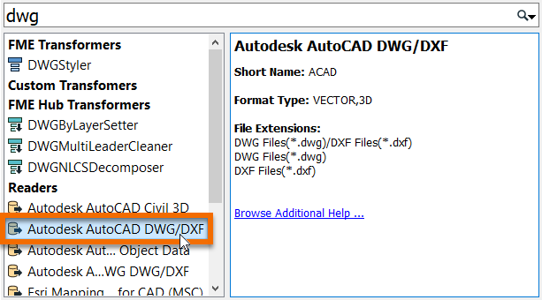
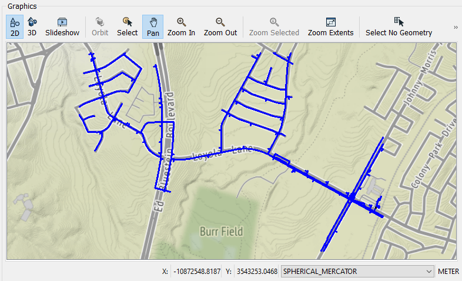
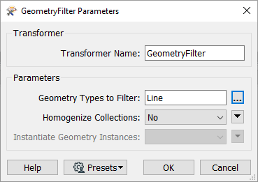
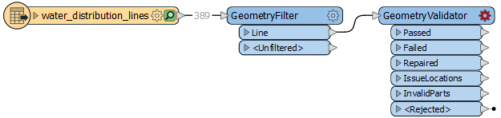
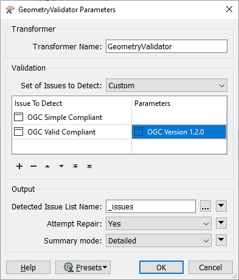
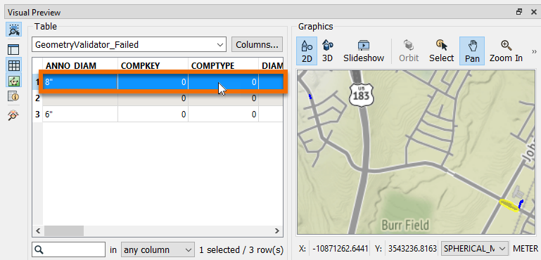
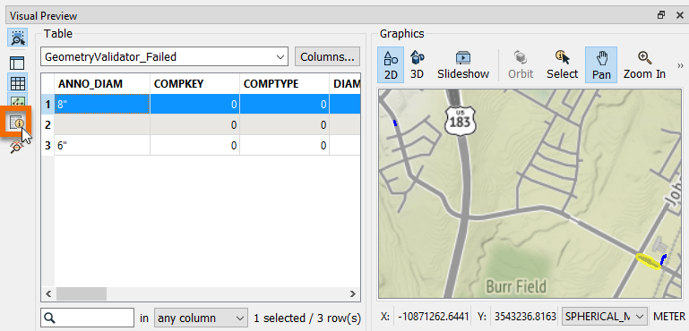
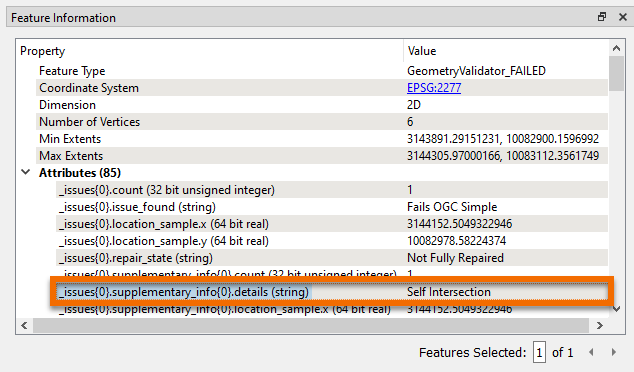

Learning Objectives
After completing this unit, you’ll be able to:
- Explain how geometry validation improves spatial data quality.
- Describe basic OGC Simple Features standards.
- Validate spatial data according to OGC Simple Features standards using the GeometryValidator.
Resources
Ensuring Spatial Data Quality
Jennifer has reviewed the available material on data validation and is ready to build her digital plan submission workspace using FME Workbench. She is going to start by building a simplified version of the workflow to test it. She decides to use some water distribution network CAD data for this test. She can add additional layers to the workflow later.
For this test data, valid features must:
Jennifer will use transformers in FME Workbench to carry out these validations.
Read in Source Data
Jennifer’s first step is to read the source dataset. She’ll eventually make this a user parameter so the submitter can upload their own CAD data to be validated. For now, she’ll use a temporary testing dataset.
She opens FME Workbench 2020.1 and clicks New to start with a blank workspace.

She clicks the blank canvas and types “DWG”, bringing up Quick Add.

She selects Autodesk AutoCAD DWG/DXF under Readers and presses Enter. She is using two test datasets: good_data.dwg and bad_data.dwg. She extracted these examples from an existing water distribution dataset to use during workspace development. good_data.dwg should pass validation and bad_data.dwg should fail.
She chooses bad_data.dwg as her test dataset for now – she will try good_data.dwg later Finally, she clicks on the Parameters button, navigates to the Group Entities By section at the top, and chooses Attribute Schema from the radio buttons. This step ensures any extended entity data on the CAD data is read into the workspace.
She fills out the Add Reader dialog like this:
|
Format
|
Autodesk AutoCAD DWG/DXF
|
|
Dataset
|
C:\FMEData2020\Resources\DigitalPlanSubmission\bad_data.dwg
|
|
Coord. System
|
EPSG:2277
|
|
Parameters > Group Entities By
|
Attribute Schema
|
She clicks OK.
She selects a single feature type named water_distribution_lines and clicks OK to add it to the canvas.
She clicks File > Save and saves her workspace, calling it “DigitalPlanSubmission.fmw”. Then she clicks the Run button, accepts the default parameter values by clicking Run again, and her data automatically appears in Visual Preview.

Validate Spatial Data Using the GeometryFilter and the GeometryValidator
Now that she has read in the CAD data, Jennifer needs to validate the geometry. She can validate that her features are lines using a GeometryFilter and that they pass OGC standards using a GeometryValidator.
She adds a GeometryFilter after her feature type by clicking the water_distiribution_lines feature type, typing “GeometryFilter”, and pressing Enter.

She double-clicks it to open the GeometryFilter Parameters window. She double-clicks Geometry Types to Filter and selects Line, then clicks OK twice to close the dialog.

Her transformer now has two ports: Line and <Unfiltered>. She will continue the workspace from the Line port and will ignore any features coming out of the <Unfiltered> port. This will ensure that only line features are read. The <Unfiltered> port could be useful in the case that, for example, a user submits text annotations in the CAD drawing. These will be ignored.
Next, she adds a GeometryValidator using Quick Add.

This powerful transformer will be used to ensure the geometry is OGC valid. She double-clicks the GeometryValidator to open its parameters and clicks in the first cell under Issues to Detect. She selects OGC Simple Compliant. Then she clicks in the next cell below and selects OGC Valid Compliant. For this one, she also selects OGC Version 1.2.0 in the Parameters column. Her dialog looks like this:

She clicks OK.
Test Workspace
Jennifer runs the workspace to test the geometry validation. She looks at the feature counts coming out of the ports and can see that one feature was <Unfiltered> (not lines) and three features failed the OGC validation.
She clicks the GeometryValidator:Failed port feature cache and clicks one of the failed features in Visual Preview Table View to select it.

Then she clicks the Toggle Feature Inspection Window button on the left side of Visual Preview to take a closer look.

The GeometryValidator automatically adds a list attribute called _issues{} to any failed features. This nested list contains a description of any violations of the standards. She sees that all three features have a single OGC standard issue, given that each _issues{} list only has one entry (index 0). She also sees that this issue means this feature: “Fails OGC Simple” (_issues{0}.issue_found) and the specific issue is “Self Intersection” (_issues{0}.supplementary_info{0}.details).

By using the GeometryFilter and GeometryValidator, Jennifer has identified four geometry validation issues: one non-line feature and three OGC validation issues. More importantly, she has created a reusable workflow that will reliably identify any such issues in submitted data.
Exercise
Now, try it yourself. Repeat the steps above using your own installation of FME 2020.1 or request an on-demand virtual machine in the footer link below. If you have your own data you’d like to try to validate, you can create your own bad_data.dwg and good_data.dwg and try using those. Just keep in mind that this geometry validation example expects lines.